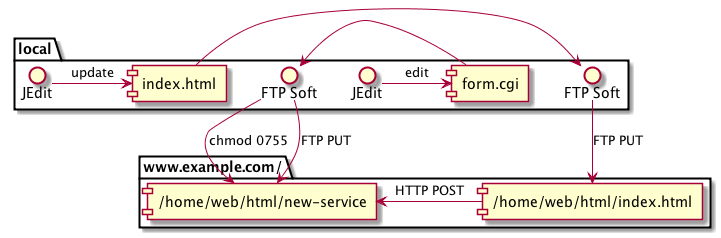
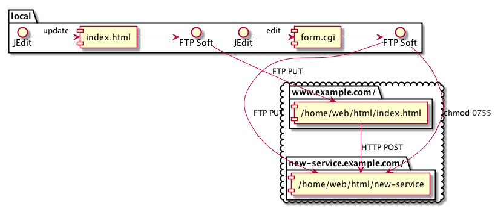
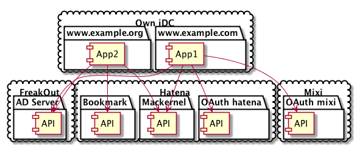
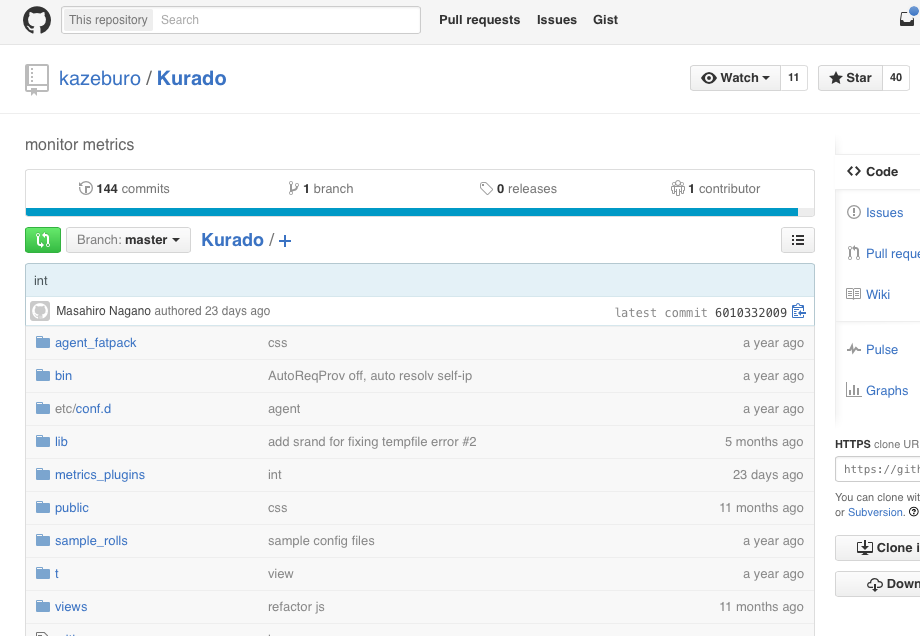
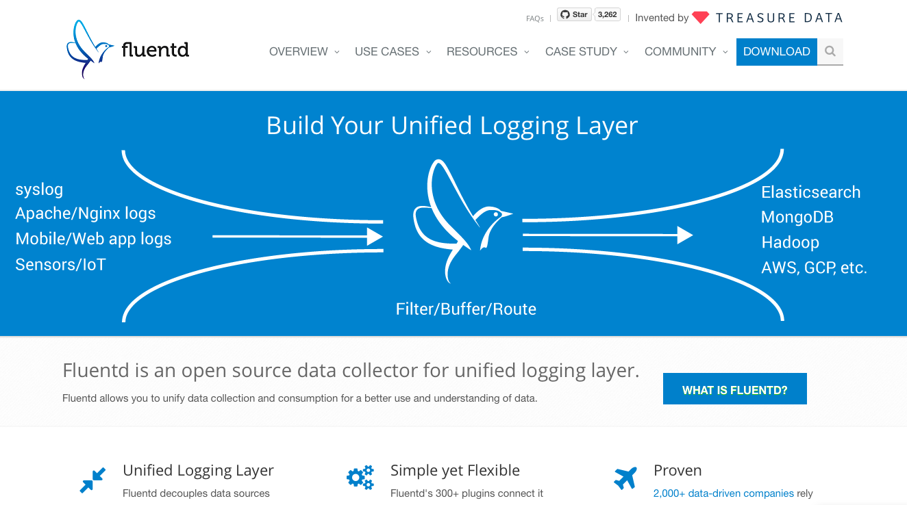

Actually that way is basic way for us / 実は普通の開発手法なんです
I will clarify it in this session / このセッションで説明します
CGI / FORM tag as a Web API
裏で Perl6 の話してるので、すこし Perl4 時代の話をします。
限定キャンペーンの為に mkdir して FTP して FTP soft で chmod 0755 して release

スケール戦略は、新しいレン鯖を借りれば OK 
Web Service API これらは要するに microservice の考えそのものです。 それが中にあるのか、外にあるのか

本題に戻りましょ
You should do the monolithic architecture on a small service 小さいサービスでは、モノリシックなコードで運用すべき
それでもできることある
最初は model で書く、そのうち分離が必要になったら model を別サーバの API の client にして、元からあった model の実装を別サーバ上で提供する
Please write by the common way
package Amon2Proj::Web::C::API;
...
sub foo {
my($class, $c) = @_;
my $data = Amon2Proj::M::Foo->bar({ ... });
$c->render_json($data);
}
package Amon2Proj::M::Foo;
sub bar {
my($class, $input) = @_;
...
return +{ ... };
}
* * * * * setlock /tmp/x.lk cron/batch-foo.pl
# in batch.pl
Amon2Proj::Batch::Foo->run;
# Amon2Proj->bootstrap and some tasks
package Amon2Proj::M::Foo;
sub bar {
my($class, $input) = @_; # you should validation to $input
$job = TheSchwartz::Job->new(
funcname => 'ImageResize',
uniqkey => $input->{item_id},
arg => [ foo => 'bar' ],
);
$client->insert($job);
return 1;
}
package ImageResize {
use base qw( TheSchwartz::Worker );
sub work {
my($class, $job) = @_;
my $item_id = $job->uniqkey;
# to image resize
$job->completed();
}
}
package main;
my $client = TheSchwartz->new( databases => $DSN );
$client->can_do('ImageResize');
$client->work();
The structure design of this stage is very important
この初期段階の設計が一番大事なので、とてもよく考えて作ってください
中規模のサービスでとるべき戦略とは?
When do you separate components from the core service? いつ分離しよう?
特定の機能専用のサーバを作るタイミング どういう時に別サーバにするか？
DRY の為にコードをコピペせずにメソッド化するのと同じで、複数のサービスで同じことをしなくても済むように、独立したサービスとして運用するのです。
ただし一般ライブラリ単体で可能な機能だけを提供するサービスを作るのは無駄です
eg. 電話番号フォーマット check API だけ作るとか
May you separate complex components by core service? メンテナンスに手間がかかるモジュールを利用するコンポーネントなどは独立すると捗る
but thoese functions provided by popular Web Services. You can use it if your company's law be allowed.
実質的に複数の service を抱えるので増える管理の手間をどう乗り越えるか?
Easy to deploy system is most important on this phase. you can choose the thin shell script system.
このフェーズで一番大事なのは Deploy の簡単さ rsync / remote shell 簡単な shell script でも OK
後方互換性の確保をしないと困る
Basically, we use HTTP-JSON API.
# in Amon2Proj/Web.pm
__PACKAGE__->load_plugins(
'Web::JSON' => { status_code_field => 'status' }
);
# in your
package Amon2Proj::Web::C::API;
sub foo {
my($class, $c) = @_;
$c->render_json(+{
status => 200, # create `X-API-Status: 200` response header
...
});
}
use JSON::XS;
my $json = JSON::XS->new->ascii;
my $json_data = $json->encode(+{
fooFount => $foo_count+0, # cast to IV (because sometime Perl cast to SV in internal)
isBar => JSON::XS::true(),
name => "$name",
});
$data => $json->decode($json_data);
package Amon2Proj::M::Foo;
use Furl::HTTP; use JSON::XS;
sub bar {
my($class, $input) = @_; # you should validation to $input
my $json = JSON::XS->new->ascii->encode({ count => $input->{count} });
my $hirom = Furl::HTTP->new;
my(undef, $code, undef, $headers, $body) = $hirom->post(
'http://doraperson2015.yapcasia.org/vote/5',
[
'Content-Type' => 'accplication/json',
'Content-Length' => length($json)
],
$json
);
return $code == 200 ? 1 : 0;
}
POST("/api/hoo")
public WebResponse hooPost(@JsonParam HooPostReqestObject req) {
String name = req.getName();
...
return renderJSON(200, new HooResponseObject("foo", 1, name));
}
Very easy!


@startuml ../imgs/web2.0-1.png
cloud "Own iDC" {
package "www.example.com" {
[ App1 ] as app1
}
package "www.example.org" {
[ App2 ] as app2
}
}
cloud "Hatena" {
package "Mackernel" {
[ API ] as mackernel
}
package "Bookmark" {
[ API ] as bookmark
}
package "OAuth hatena" {
[ API ] as hoauth
}
}
cloud "Mixi" {
package "OAuth mixi" {
[ API ] as moauth
}
}
cloud "FreakOut" {
package "AD Server" {
[ API ] as ad
}
}
app1 -> ad
app1 -> mackernel
app2 -> ad
app2 -> mackernel
app2 -> bookmark
app1 -> hoauth
app1 -> moauth
@enduml
専門家がいるなら、その専門家に特定のサービスだけ作ってもらえばよい あなたが専門家なら、それをすればよい
You should anytime write the good components! 正しいコンポーネント化が重要
Use a spacebar or arrow keys to navigate